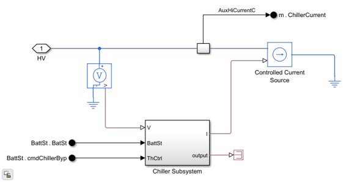

ChillerNoCoolant
Simplified chiller model without coolant loop coupling.
Contents
Overview
The ChillerNoCoolant block represents the chiller electrical load on the HV bus without thermal-liquid ports. The power draw is modeled but there is no coolant loop interaction. This fidelity is used when the vehicle model does not include a coolant loop but the chiller power consumption still needs to be accounted for in range and efficiency calculations.
Model: ChillerNoCoolant.slx
Parameters: ChillerNoCoolantParams.m
Thermal Coupling: None
Open Model

Ports
Inputs
- Battery status - Pack state signals.
- Chiller bypass control - Enable command.
- HV bus connection - Electrical connection for power draw.
Outputs
- Chiller Current - Current drawn from the HV bus.
- HV Power - Electrical power consumed.
Workflows
The ChillerNoCoolant block is a simplified variant used as a standalone auxiliary load model where the coolant loop is not modeled, suitable for fast electrical-only simulations where auxiliary power consumption matters.